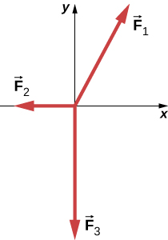
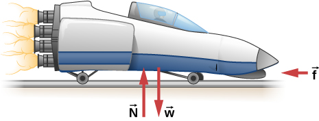
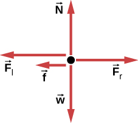
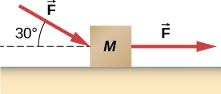
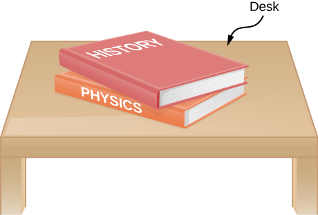
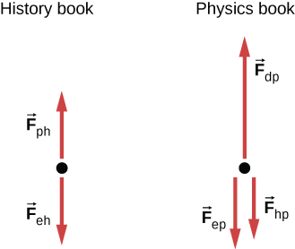
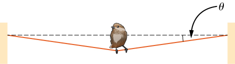
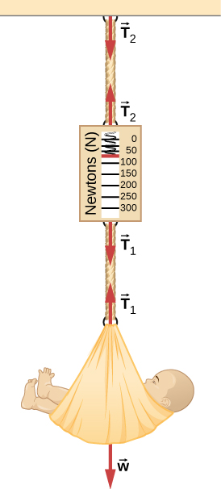
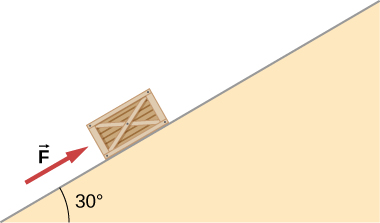
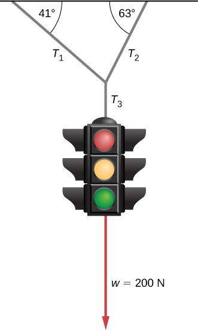

Problems
5.1 Forces
Two ropes are attached to a tree, and forces of and are applied. The forces are coplanar (in the same plane). (a) What is the resultant (net force) of these two force vectors? (b) Find the magnitude and direction of this net force.
A telephone pole has three cables pulling as shown from above, with , , and . (a) Find the net force on the telephone pole in component form. (b) Find the magnitude and direction of this net force.
Two teenagers are pulling on ropes attached to a tree. The angle between the ropes is . David pulls with a force of 400.0 N and Stephanie pulls with a force of 300.0 N. (a) Find the component form of the net force. (b) Find the magnitude of the resultant (net) force on the tree and the angle it makes with David’s rope.
5.2 Newton's First Law
Two forces of and act on an object. Find the third force that is needed to balance the first two forces.
While sliding a couch across a floor, Andrea and Jennifer exert forces and on the couch. Andrea’s force is due north with a magnitude of 130.0 N and Jennifer’s force is east of north with a magnitude of 180.0 N. (a) Find the net force in component form. (b) Find the magnitude and direction of the net force. (c) If Andrea and Jennifer’s housemates, David and Stephanie, disagree with the move and want to prevent its relocation, with what combined force should they push so that the couch does not move?
5.3 Newton's Second Law
Andrea, a 63.0-kg sprinter, starts a race with an acceleration of . What is the net external force on her?
If the sprinter from the previous problem accelerates at that rate for 20.00 m and then maintains that velocity for the remainder of a 100.00-m dash, what will her time be for the race?
A cleaner pushes a 4.50-kg laundry cart in such a way that the net external force on it is 60.0 N. Calculate the magnitude of his cart’s acceleration.
Astronauts in orbit are apparently weightless. This means that a clever method of measuring the mass of astronauts is needed to monitor their mass gains or losses, and adjust their diet. One way to do this is to exert a known force on an astronaut and measure the acceleration produced. Suppose a net external force of 50.0 N is exerted, and an astronaut’s acceleration is measured to be . (a) Calculate her mass. (b) By exerting a force on the astronaut, the vehicle in which she orbits experiences an equal and opposite force. Use this knowledge to find an equation for the acceleration of the system (astronaut and spaceship) that would be measured by a nearby observer. (c) Discuss how this would affect the measurement of the astronaut’s acceleration. Propose a method by which recoil of the vehicle is avoided.
In Figure 5.12, the net external force on the 24-kg mower is given as 51 N. If the force of friction opposing the motion is 24 N, what force F (in newtons) is the person exerting on the mower? Suppose the mower is moving at 1.5 m/s when the force F is removed. How far will the mower go before stopping?
The rocket sled shown below accelerates opposite to the motion at a rate of . What force is necessary to produce this acceleration opposite to the motion? Assume that the rockets are off. The mass of the system is kg.
If the rocket sled shown in the previous problem starts with only one rocket burning, what is the magnitude of this acceleration? Assume that the mass of the system is kg, the thrust T is and the force of friction opposing the motion is 650.0 N. (b) Why is the acceleration not one-fourth of what it is with all rockets burning?
What is the acceleration opposite to the motion of the rocket sled if it comes to rest in 1.10 s from a speed of 1000.0 km/h? (Such acceleration opposite to the motion caused one test subject to black out and have temporary blindness.)
Suppose two children push horizontally, but in exactly opposite directions, on a third child in a wagon. The first child exerts a force of 75.0 N, the second exerts a force of 90.0 N, friction is 12.0 N, and the mass of the third child plus wagon is 23.0 kg. (a) What is the system of interest if the acceleration of the child in the wagon is to be calculated? (See the free-body diagram.) (b) Calculate the acceleration. (c) What would the acceleration be if friction were 15.0 N?
A powerful motorcycle can produce an acceleration of while traveling at 90.0 km/h. At that speed, the forces resisting motion, including friction and air resistance, total 400.0 N. (Air resistance is analogous to air friction. It always opposes the motion of an object.) What is the magnitude of the force that motorcycle exerts backward on the ground to produce its acceleration if the mass of the motorcycle with rider is 245 kg?
A car with a mass of 1000.0 kg accelerates from 0 to 90.0 km/h in 10.0 s. (a) What is its acceleration? (b) What is the net force on the car?
The driver in the previous problem applies the brakes when the car is moving at 90.0 km/h, and the car comes to rest after traveling 40.0 m. What is the net force on the car during its acceleration opposite to the motion?
An 80.0-kg passenger in an SUV traveling at km/h is wearing a seat belt. The driver slams on the brakes and the SUV stops in 45.0 m. Find the force of the seat belt on the passenger.
A particle of mass 2.0 kg is acted on by a single force (a) What is the particle’s acceleration? (b) If the particle starts at rest, how far does it travel in the first 5.0 s?
Suppose that the particle of the previous problem also experiences forces and What is its acceleration in this case?
In the following figure, the horizontal surface on which this block slides is frictionless. If the two forces acting on it each have magnitude and , what is the magnitude of the resulting acceleration of the block?
5.4 Mass and Weight
The weight of an astronaut plus their space suit on the Moon is only 250 N. (a) How much does the suited astronaut weigh on Earth? (b) What is the mass on the Moon? On Earth?
Suppose the mass of a fully loaded module in which astronauts take off from the Moon is kg. The thrust of its engines is N. (a) Calculate the module’s magnitude of acceleration in a vertical takeoff from the Moon. (b) Could it lift off from Earth? If not, why not? If it could, calculate the magnitude of its acceleration.
A rocket sled accelerates at a rate of . Its passenger has a mass of 75.0 kg. (a) Calculate the horizontal component of the force the seat exerts against his body. Compare this with his weight using a ratio. (b) Calculate the direction and magnitude of the total force the seat exerts against his body.
Repeat the previous problem for a situation in which the rocket sled accelerates opposite to the motion at a rate of . In this problem, the forces are exerted by the seat and the seat belt.
A body of mass 2.00 kg is pushed straight upward by a 25.0 N vertical force. What is its acceleration?
A car weighing 12,500 N starts from rest and accelerates to 83.0 km/h in 5.00 s. The friction force is 1350 N. Find the applied force produced by the engine.
A body with a mass of 10.0 kg is assumed to be in Earth’s gravitational field with . What is the net force on the body if there are no other external forces acting on the object?
A firefighter has mass m; they hear the fire alarm and slides down the pole with acceleration a (which is less than g in magnitude). (a) Write an equation giving the vertical force they must apply to the pole. (b) If their mass is 90.0 kg and they accelerate at what is the magnitude of their applied force?
A baseball catcher is performing a stunt for a television commercial. He will catch a baseball (mass 145 g) dropped from a height of 60.0 m above his glove. His glove stops the ball in 0.0100 s. What is the force exerted by his glove on the ball?
When the Moon is directly overhead at sunset, the force by Earth on the Moon, , is essentially at to the force by the Sun on the Moon, , as shown below. Given that and all other forces on the Moon are negligible, and the mass of the Moon is determine the magnitude of the Moon’s acceleration.

5.5 Newton’s Third Law
(a) What net external force is exerted on a 1100.0-kg artillery shell fired from a battleship if the shell is accelerated at (b) What is the magnitude of the force exerted on the ship by the artillery shell, and why?
A rugby player is being pushed backward by an opposing player who is exerting a force of 800.0 N on him. The mass of the losing player plus equipment is 90.0 kg, and he is accelerating backward at . (a) What is the force of friction between the losing player’s feet and the grass? (b) What force does the winning player exert on the ground to move forward if his mass plus equipment is 110.0 kg?
A history book is lying on top of a physics book on a desk, as shown below; a free-body diagram is also shown. The history and physics books weigh 14 N and 18 N, respectively. Identify each force on each book with a double subscript notation (for instance, the contact force of the history book pressing against physics book can be described as ), and determine the value of each of these forces, explaining the process used.
 A truck collides with a car, and during the collision, the net force on each vehicle is essentially the force exerted by the other. Suppose the mass of the car is 550 kg, the mass of the truck is 2200 kg, and the magnitude of the truck’s acceleration is . Find the magnitude of the car’s acceleration.
5.6 Common Forces
A leg is suspended in a traction system, as shown below. (a) Which pulley in the figure is used to calculate the force exerted on the foot? (b) What is the tension in the rope? Here is the tension, is the weight of the leg, and is the weight of the load that provides the tension. Express answers in terms of the unknown masses and angle.
![Figure shows a leg on the left. It is attached to a rope at the ankle and suspended from a pulley at the top. The rope continues to a second pulley on the right of the first, a third one to the bottom of the second, a fourth one to the bottom left of the third and a fifth one to the bottom right of the fourth. An object with weight w = mg is attached at the end of the rope. An arrow labeled w subscript leg points downwards from the ankle and an arrow labeled T points upwards from there. An arrow labeled T, from the fourth pulley to the third, forms an angle theta with the horizontal. Another arrow labeled T, from the fourth pulley to the fifth forms an angle minus theta with the horizontal.](3e1bb99b76ac29bfbad8dbf8da4c6858a1bf7294.jpeg)
Suppose the shinbone in the preceding image was a femur in a traction setup for a broken bone, with pulleys and rope available. How might we be able to increase the force along the femur using the same weight?
Two teams of nine members each engage in a tug-of-war, pulling in opposite directions on a horizontal rope. Each of the first team’s members has an average mass of 68 kg and exerts an average force of 1350 N horizontally on the ground as they pull on the rope. Each of the second team’s members has an average mass of 73 kg and exerts an average force of 1365 N horizontally on the ground as they pull on the rope in the opposite direction. (a) What is the magnitude of the acceleration of the two teams, and which team wins? (b) What is the tension in the section of rope between the teams?
What force does a trampoline have to apply to Jennifer, a 45.0-kg gymnast, to accelerate her straight up at ? The answer is independent of the velocity of the gymnast—she can be moving up or down or can be instantly stationary.
(a) Calculate the tension in a vertical strand of spider web if a spider of mass hangs motionless on it. (b) Calculate the tension in a horizontal strand of spider web if the same spider sits motionless in the middle of it much like the tightrope walker in Figure 5.26. The strand sags at an angle of below the horizontal. Compare this with the tension in the vertical strand (find their ratio).
Suppose Kevin, a 60.0-kg gymnast, climbs a rope. (a) What is the tension in the rope if he climbs at a constant speed? (b) What is the tension in the rope if he accelerates upward at a rate of ?
Show that, as explained in the text, a force exerted on a flexible medium at its center and perpendicular to its length (such as on the tightrope wire in Figure 5.26) gives rise to a tension of magnitude .
Consider Figure 5.28. The driver attempts to get the car out of the mud by exerting a perpendicular force of 610.0 N, and the distance she pushes in the middle of the rope is 1.00 m while she stands 6.00 m away from the car on the left and 6.00 m away from the tree on the right. What is the tension T in the rope, and how do you find the answer?
A bird has a mass of 26 g and perches in the middle of a stretched telephone line. (a) Show that the tension in the line can be calculated using the equation . Determine the tension when (b) and (c) . Assume that each half of the line is straight.
One end of a 30-m rope is tied to a tree; the other end is tied to a car stuck in the mud. The motorist pulls sideways on the midpoint of the rope, displacing it a distance of 2 m. If he exerts a force of 80 N under these conditions, determine the force exerted on the car.
Consider the baby being weighed in the following figure. (a) What is the mass of the infant and basket if a scale reading of 55 N is observed? (b) What is tension in the cord attaching the baby to the scale? (c) What is tension in the cord attaching the scale to the ceiling, if the scale has a mass of 0.500 kg? (d) Sketch the situation, indicating the system of interest used to solve each part. The masses of the cords are negligible.
What force must be applied to a 100.0-kg crate on a frictionless plane inclined at to cause an acceleration of up the plane?
A 2.0-kg block is on a perfectly smooth ramp that makes an angle of with the horizontal. (a) What is the block’s acceleration down the ramp and the force of the ramp on the block? (b) What force applied upward along and parallel to the ramp would allow the block to move with constant velocity?
5.7 Drawing Free-Body Diagrams
A ball of mass m hangs at rest, suspended by a string. (a) Sketch all forces. (b) Draw the free-body diagram for the ball.
A car moves along a horizontal road. Draw a free-body diagram; be sure to include the friction of the road that opposes the forward motion of the car.
A runner pushes against the track, as shown. (a) Provide a free-body diagram showing all the forces on the runner. (Hint: Place all forces at the center of his body, and include his weight.) (b) Give a revised diagram showing the xy-component form.
The traffic light hangs from the cables as shown. Draw a free-body diagram on a coordinate plane for this situation.
